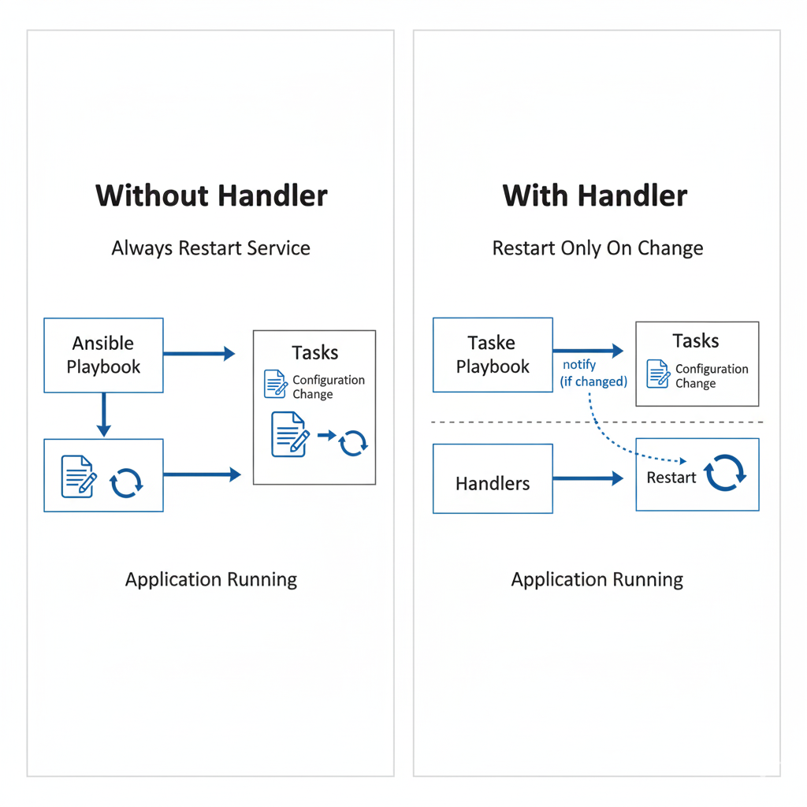
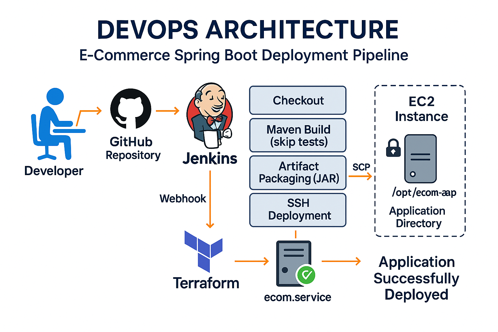
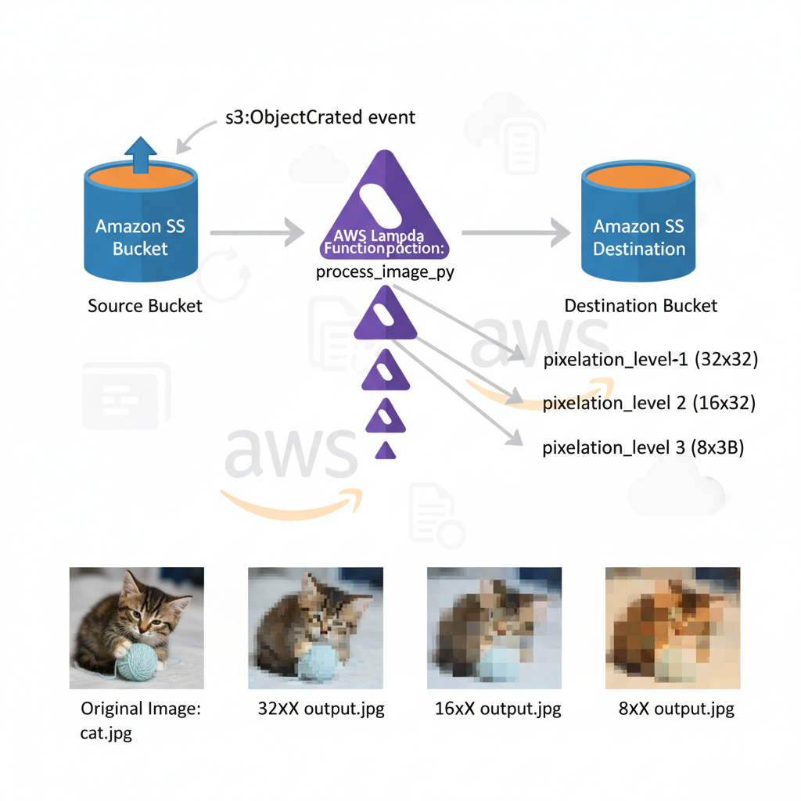
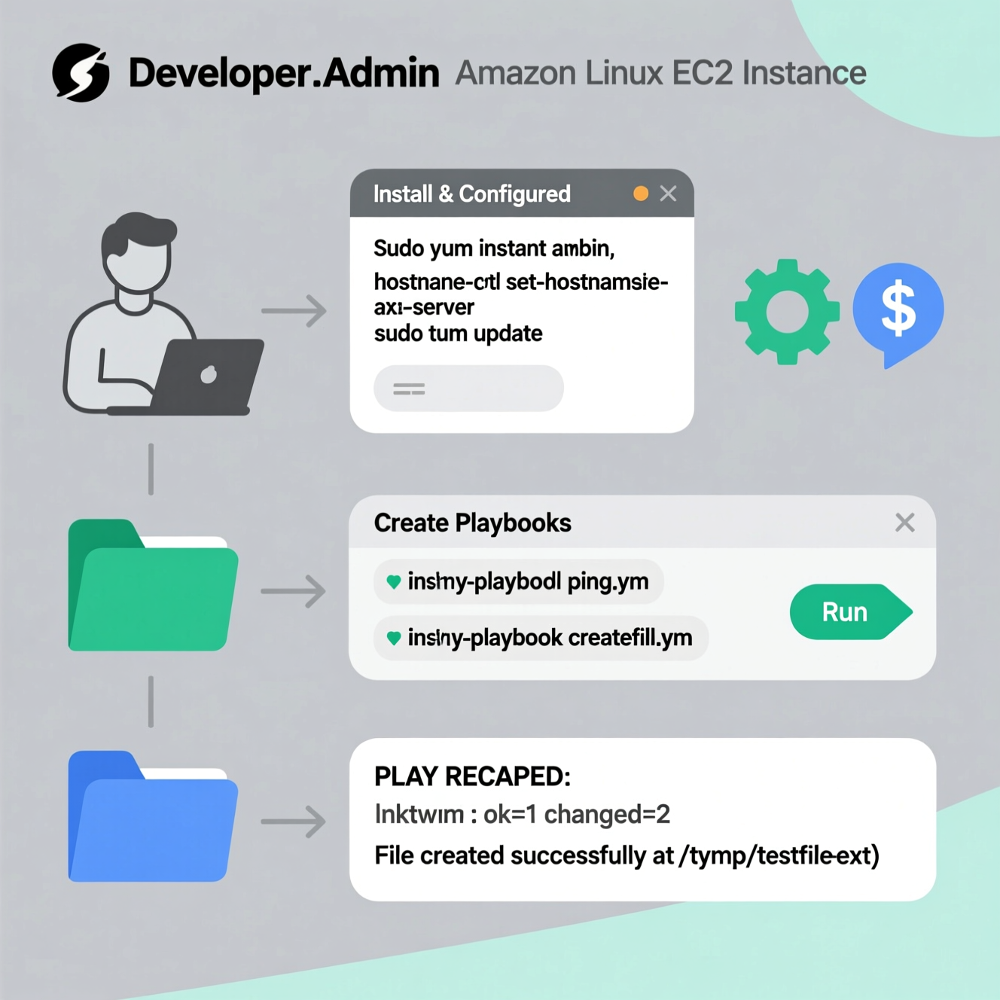

Medium Article
End-to-End 3 Tier Infrastructure Automation on AWS
Complete guide on automating 3-tier infrastructure using Terraform, Ansible & Jenkins
Read on Medium →I am a DevOps and Site Reliability Engineer with a strong focus on designing scalable, automated, and highly available cloud infrastructure. My expertise includes AWS cloud architecture, Infrastructure as Code (Terraform), configuration management (Ansible), CI/CD pipeline automation (Jenkins and GitHub Actions), and container orchestration using Kubernetes.
As the Founder of Terra.ai, I am building a platform that empowers students and professionals to generate production-ready Terraform-based AWS infrastructure efficiently. My goal is to simplify cloud automation and make modern infrastructure practices more accessible and practical.
I am driven by an automation-first mindset, reliability-by-design principles, and a commitment to building resilient, scalable, and secure cloud systems.
LearnTube.ai
Complete infrastructure automation using Terraform, Ansible & Jenkins
View on GitHub →CI/CD pipeline implementation with Terraform & Jenkins
View on GitHub →Voice-controlled infrastructure deployment automation
View on GitHub →
Complete guide on automating 3-tier infrastructure using Terraform, Ansible & Jenkins
Read on Medium →
Handler vs Without Handler - A comprehensive comparison
Read on Medium →
Using Ansible for automated application deployment
Read on Medium →
Collection of practical Ansible automation projects
Read on Medium →
Complete automation with Terraform & Jenkins
Read on Medium →
Automated Image Pixelation System using serverless architecture
Read on Medium →
Complete guide to setting up and using Ansible on AWS EC2
Read on Medium →
Setting up continuous integration and deployment with Jenkins on AWS
Read on Medium →